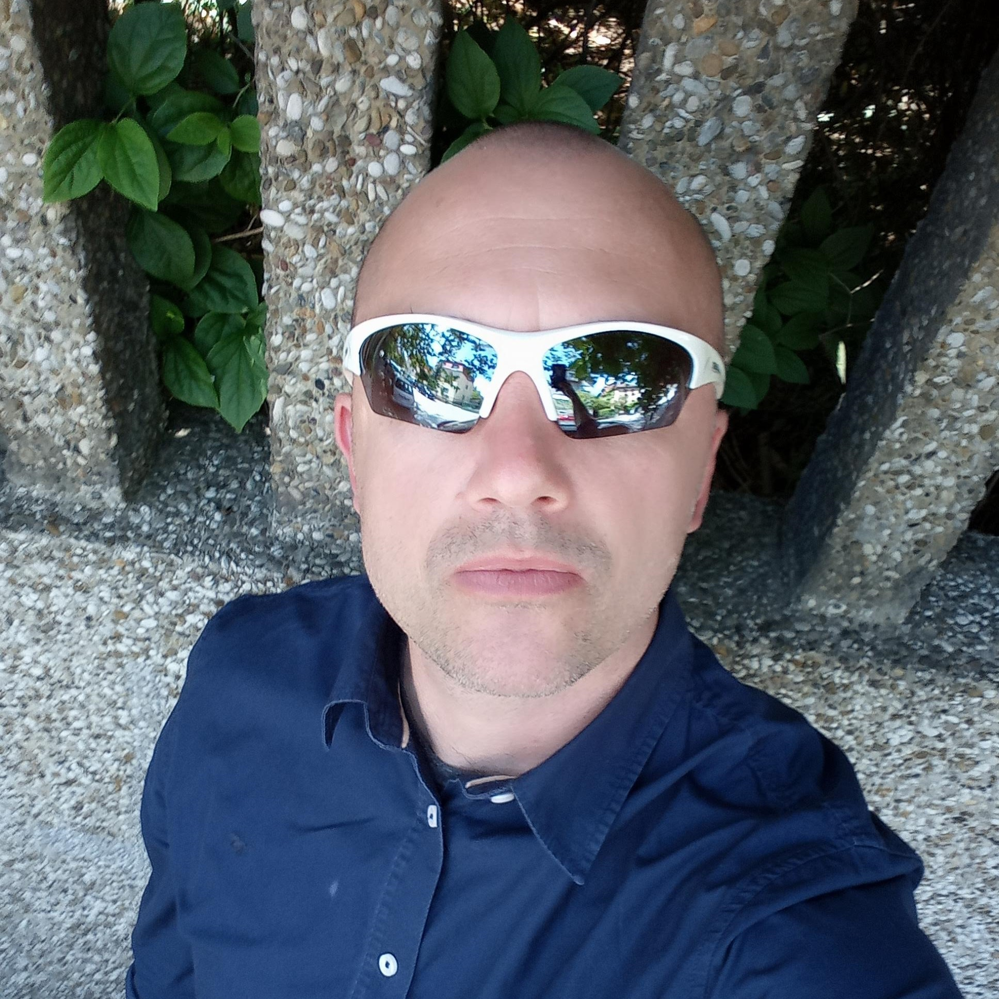

KREŠIMIR-MIRKO FIKET (© KMF)
TAKSI VOZAČ KOJI ŽELI BITI PROGRAMER
(CV iz prošlog života)
KONTAKT PODACI
- +385 91 577 8068
- kresimir.fiket@gmail.com
- Tome Gajdeka 36, Zagreb, Croatia
- Web stranica Portfolio
PROFIL
Magistar inženjer prehrambene tehnologije. Diplomu stekao na Prehrambeno-biotehnološkom fakultetu Sveučilišta u Zagrebu. Opsežno iskustvo u sustavima kvalitete i upravljanja u prehrambenoj industriji (HACCP, ISO 9001, ISO 14001, ISO 22000) što se tiče audita i uvođenja samih sustava. Temeljna znanja stekao u proizvodnji i punionici piva.
OBRAZOVANJE
1990 - 1994:
XV. GIMNAZIJA (MIOC), ZAGREB, HRVATSKA
1994 - 2000:
SVEUČILIŠTE U ZAGREBU, MAGISTAR INŽENJER PREHRAMBENE TEHNOLOGIJE
RADNO ISKUSTVO
MINISTARSTVO ZDRAVLJA
Nov 2010 - Sep 2017
Sanitarni inspektor
- Sigurnost hrane / HACCP auditi (trgovački centri, industrija, ketering)
- ISO 22000 auditi (HACCP, GMP, higijena, sljedivost, pravo potrošača na dostupnost podataka o hrani)
TETRAPAK HRVATSKA
Jul 2009 - Oct 2010
Technical Service Administrator
- Uvoz & ponovni izvoz of rezervnih dijelova za Tetra Pak strojeve.
- Uvoz pakirnog materijala za mliječnu industriju u Hrvatskoj / ponovni izvoz u Bosnu i Hercegovinu te Albaniju
ZAGREBAČKA PIVOVARA (AB InBev)
Jul 2001 - Dec 2008
Field Based Specialist
- Prijemni testovi linija za punjenje / pakiranje piva, nakon godišnjeg remonta ili ugradnje nove linije
- Aplikacija za praćenje kratkih zastoja / praćenje dugih zastoja te analiza / SIC sustav (kontrola kratkih zastoja)
Full Time Facilitator
- Auditiranje pivovara na području "Srednje Europe" i vrednovanje u odnosu na željene standarde (Upravljanje, Kontrola kvalitete, Održavanje opreme, Logistika i Ljudski resursi)
- Uvođenje jedinstvenog sustava Upravljanja te Kontrole kvalitete i Održavanja opreme
Procesni inženjer
- Linije za punjenje / pakiranje piva
VJEŠTINE
- Sigurnost hrane / HACCP auditi
- ISO 22000 auditi
- Sistemi Upravljanja te Kontrole kvalitete
- Sistemi održavanja opreme
- Microsoft Office (Word, Excel, PowerPoint, Outlook)
CERTIFIKATI
- BTSF planiranje i provođenje audita
- BTSF kontrola kontaminanata u hrani i stočnoj hrani
- BTSF aditivi, enzimi i arome
- BTSF materijali u kontaktu s hranom
OSVRT NA DOSADAŠNJI RAD
U četvrtom srednje razmatrao sam studiranje informatičkih znanosti. Iste su se mogle studirati jedino
na FER-u, ali nisam volio fiziku koja je temelj cijelog studija. Kako se nisam osjećao sposobnim
završiti FER, a dobro sam poznavao matematiku i kemiju, odlučio sam upisati
Prehrambeno-biotehnološki fakultet u Zagrebu.
Nakon završenog fakulteta i nekoliko godina rada u
Zagrebačkoj pivovari, pokušao sam promijeniti profesiju upisavši Ekonomski fakultet u Zagrebu. Bio
sam oženjen i otac male bebe te sam ubrzo odustao.
Kako je vrijeme prolazilo sve sam se lošije
osjećao u struci te sam odlučio otići u Irsku. Nakon provedenih godinu i pol vratio sam se i otvorio
taksi obrt. Trenuto radim kao vozač na svom autu i obrtu unutar udruženja Taksi 1717, a također i
kao operater u našem dispečerskom centru u Travnom.
Prije nekoliko godina prošao sam tečaj na
platformi Udemy, napravio svoju web stranicu i počeo razmišljati o programiranju kao struci.